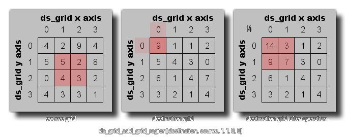

Mit dieser Funktion können Sie alle Werte aller Zellen, die sich im Quellbereich eines Gitters befinden, zu den Werten im Zielgitter hinzufügen, wie unten dargestellt: 
HINWEIS: Sie können diese Funktion auch in demselben Raster verwenden, um Werte aus einem Bereich des Rasters zu den in einem anderen Feld gespeicherten hinzuzufügen (siehe Codebeispiel unten).
ds_grid_add_grid_region(index, source, x1, y1, x2, y2, xpos, ypos);
| Streit | Beschreibung |
|---|---|
| index | Der Index des Zielgitters. |
| source | Der Index des Quellgitters. |
| x1 | Die linke Position des Zellbereichs, der aus dem Quellraster kopiert werden soll. |
| y1 | Die oberste Position des Zellbereichs, der aus dem Quellraster kopiert werden soll. |
| x2 | Die rechte Position des Zellbereichs, der aus dem Quellraster kopiert werden soll. |
| y2 | Die untere Position des Zellbereichs, der aus dem Quellraster kopiert werden soll. |
| xpos | Die x-Position im Zielgitter, zu der der Quellbereich hinzugefügt werden soll. |
| ypos | Die y-Position im Zielgitter, zu der der Quellbereich hinzugefügt werden soll. |
N/A
ds_grid_add_grid_region(grid, grid, 0, 0, 1, 5, 2,
0)
Der obige Code würde den Bereich der Zellen von (0,0) bis (1,5) des in der Variablen "grid" indizierten ds-grid kopieren und sie den Zellen von Position (2,0) des gleichen ds_grid hinzufügen.